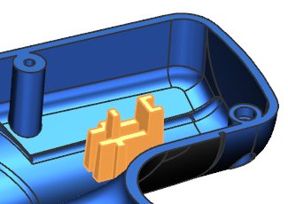

创建链接的部件模块
如果您是总设计师，您需要将内部部件模块转换为外部链接的部件模块，这将允许助理设计师单独在链接的部件模块文件中工作。
-
打开 wav3_120169。

-
确保未选中工具→更新→部件间更新→延迟几何体、表达式和 PMI 选项。
-
在部件导航器中，右击部件模块 “Heat Sink”并选择全部展开。
该部件模块中包含三个收集器：输入、工作以及输出，在工作部件模块中包含一个草图与两个拉伸特征，这三个特征组成这一个部件模块。

您需要把这个部件模块转换为外部 WAVE 链接的部件模块。
-
右击部件模块 “Heat Sink”并选择创建链接部件模块部件。
-
在名称输入框中，键入 heat_sink_linked_file。
在文件夹输入框中选择您想要的文件夹，然后点击确定。
-
查看部件导航器，注意到：
-
新特征的名称为链接的部件模块
-
工作收集器已经消失，它被移动到链接的部件模块文件中
-
输出收集器中含有一个 WAVE 链接：
 链接的面 (13)
链接的面 (13)这个子特征被 WAVE 链接到链接的部件模块文件的输出收集器中的父特征。
-
-
右击链接的部件模块 “Heat Sink”并选择链接部件设为工作部件，以检查您发送给助理设计师的部件文件。
您也可以使用链接部件设为工作部件来显示助理设计师的工作。

-
点击标准工具条上的保存
 。
。 -
为了再次显示主部件，右击链接的部件模块 “Heat Sink”并选择主部件设为工作部件。
-
选择文件→关闭→选定的部件。
-
在部件组中，选择 heat_sink_linked_file.prt 并点击确定。
将链接的部件模块文件关闭，以解除对该文件的锁定，以便助理设计师可以在该文件中工作。